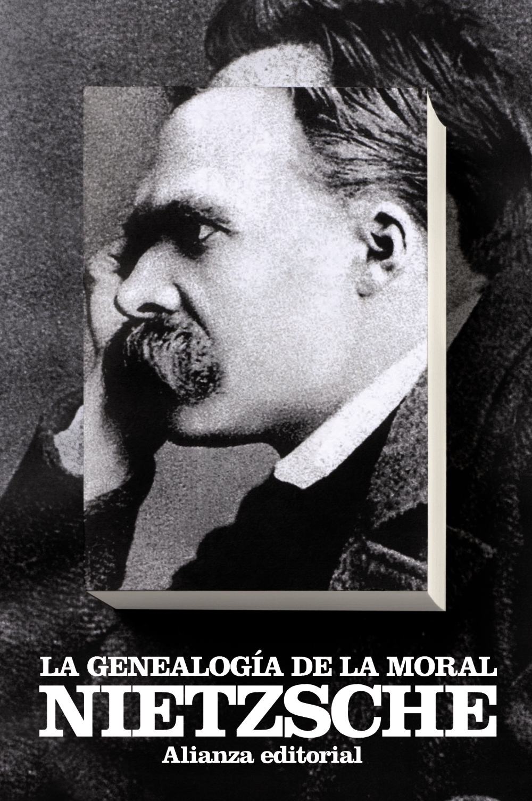
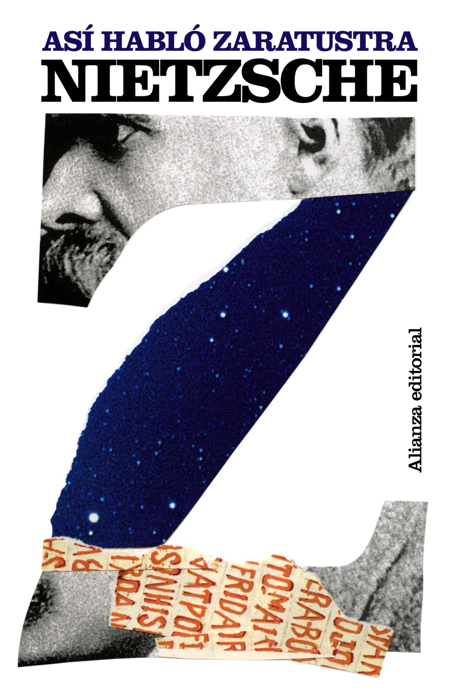
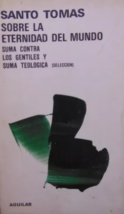
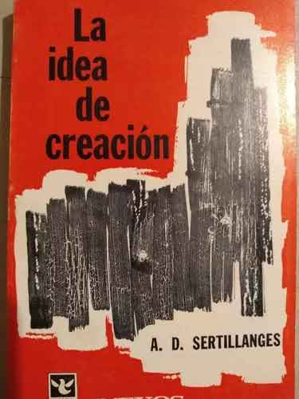
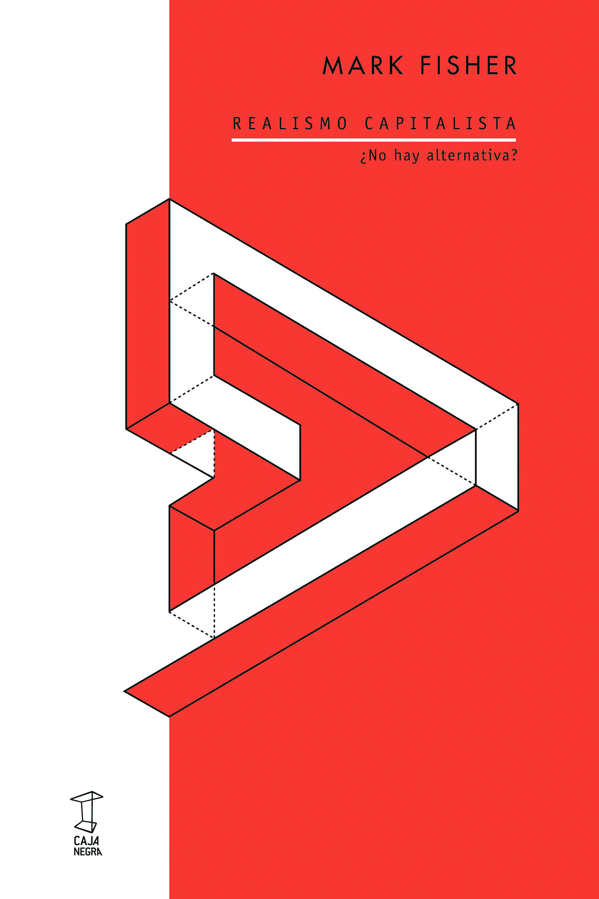
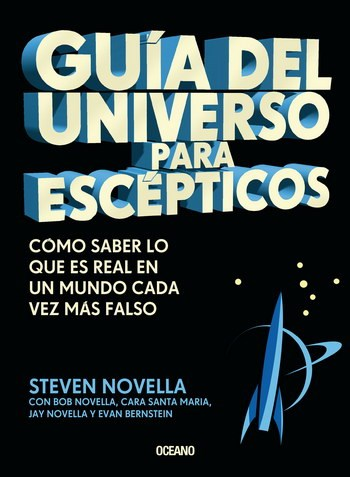
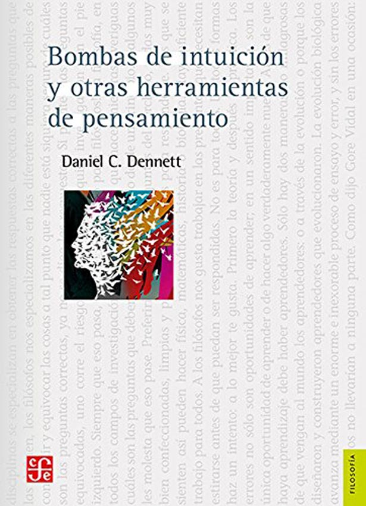

Biblioteca
Esta sección contiene en orden cronológico los distintos libros y artículos que leí. Esto me facilita el citado, ya que siempre que cite un libro, será la edición aquí listada a menos que aclare lo contrario en alguna publicación individualmente. Abajo de las imágenes de cada libro dejo una lista que aclara el año de la edición especifica que yo leí.







Fechas de la edición de los textos citados
| Libro | Fecha |
|---|---|
| Crepúsculo de los ídolos | 1996 |
| El anticristo | 1997 |
| El Gay Saber | 1986 |
| Más alla del bien y del mal | 2020 |
| La genealogía de la moral | 1975 |
| Así habló Zaratustra | 2016 |
| Ecce homo | 1995 |
| El Fracaso de la Derecha | 2022 |
| Investigaciones filosóficas | 2008 |
| Sobre la Eternidad del Mundo | 1981 |
| La Idea de Creation | 1969 |
| Realismo Capitalista | 2023 |
| Guía del Universo Para Escépticos | 2020 |
| Bombas de Intuición | 2015 |
Artículos Leídos
En la siguiente lista dejo artículos o fragmentos que yo leí o creo valen la pena leer sobre varios temas distintos. Todos aquellos que no estén en su dirección original serán subidos a mi google drive
- '¿Donde Estoy?' de Daniel Dennett
- '¿Es Dios Taoista?' de Raymond Smullyan
- 'Sobre Verdad y Mentira en Sentido Extramoral' de Friedrich Nietzsche
- '¿Eres Anarquista?¡La Respuesta Podría Sorprenderte!' de David Rolfe Graeber
- 'Fragmentos' de Heraclito
- 'The Unreality of Time' de J.M.E. McTaggart
- 'Sobre el Fenomeno de los Trabajos de Mierda' de David Rolfe Graeber
- 'The More Your Job Helps Others, The Less You Get Paid' de David Rolfe Graeber
- 'Neoliberalism (or the Bureaucratization of the World)' de David Rolfe Graeber